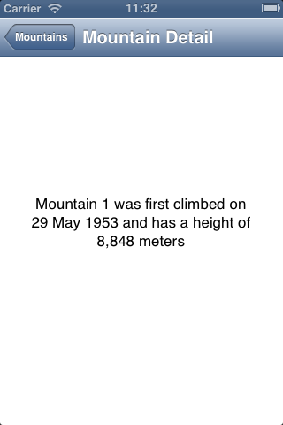

Overview
Test any IOS native, hybrid (beta), or mobile web application using the selenium API. IOS automation becomes just another driver. You can reuse the helper classes from your web tests to create data, and follow the same designs you're used to ( page object etc ).Writing the first native test
Make sure you've been through the setup page and that all the requirements are met
Start the server and connect the Intl moutains demo app from Apple
$java -jar server-standalone-0.5.0.jar -aut ~/Documents/build/InternationalMountains.app -port 4444
start the app, find some elements,click on the first element,print some text,take a screenshot and quit.
public static void main(String[] args) throws MalformedURLException {
// create a selenium desiredCapabilities object with the right values.
DesiredCapabilities cap = IOSCapabilities.iphone("InternationalMountains", "1.1");
// start the application
RemoteWebDriver driver = new RemoteWebDriver(new URL("http://localhost:4444/wd/hub"), cap);
// check that the 9 mountains of the app are there.
List cells = driver.findElements(By.className("UIATableCell"));
Assert.assertEquals(9,cells.size());
// get the 1st mountain
WebElement first = cells.get(0);
first.click();
// take a screenshot using the normal selenium api.
TakesScreenshot screen =(TakesScreenshot)new Augmenter().augment(driver);
File ss = new File("screenshot.png");
screen.getScreenshotAs(OutputType.FILE).renameTo(ss);
System.out.println("screenshot take :"+ss.getAbsolutePath());
// access the content
By selector = By.xpath("//UIAStaticText[contains(@name,'climbed')]");
WebElement text = driver.findElement(selector);
System.out.println(text.getAttribute("name"));
// end the test
driver.quit();
}
will print out :
Mountain 1 was first climbed on 29 May 1953 and has a height of 8,848 meters
and you now have a screenshot of the old mountain details :
Native tests and localization
IOS automation is very content based. There is no id like for web pages. This makes testing of localized pages a bit trickier to test.Fortunately the localization data is embedded into the app, so the server can access it if you know the key for the content.
In the previous example, the app started in the default language, english and the locator is hardcoded to english.Let's start it in chinese, and make the test content free.
To specify the language :
DesiredCapabilities cap = IOSCapabilities.iphone("InternationalMountains", "1.1");
cap.setCapability(IOSCapabilities.LANGUAGE,"zh");
and make the locator content free :
// access the content
By contentFree = By.xpath("//UIAStaticText[matches(@name,l10n('sentenceFormat'))]");
WebElement text = driver.findElement(contentFree);
The complete test code is now content free, and you can switch between en, fr and zh without having to maintain your own localization dictionary.You can now start building your generic page objects, and focus on the functionality rather than the content.
Complete code for zh :
public static void main(String[] args) throws MalformedURLException {
// create a selenium desiredCapabilities object with the right values.
DesiredCapabilities cap = IOSCapabilities.iphone("InternationalMountains", "1.1");
cap.setCapability(IOSCapabilities.LANGUAGE,"zh");
// start the application
RemoteWebDriver driver = new RemoteWebDriver(new URL("http://localhost:4444/wd/hub"), cap);
// check that the 9 mountains of the app are there.
List cells = driver.findElements(By.className("UIATableCell"));
Assert.assertEquals(9,cells.size());
// get the 1st mountain
WebElement first = cells.get(0);
first.click();
// take a screenshot using the normal selenium api.
TakesScreenshot screen =(TakesScreenshot)new Augmenter().augment(driver);
File ss = new File("screenshot-zh.png");
screen.getScreenshotAs(OutputType.FILE).renameTo(ss);
System.out.println("screenshot take :"+ss.getAbsolutePath());
// access the content
By contentFree = By.xpath("//UIAStaticText[matches(@name,l10n('sentenceFormat'))]");
WebElement text = driver.findElement(contentFree);
System.out.println(text.getAttribute("name"));
// end the test
driver.quit();
}
will print out :
screenshot take :/Users/freynaud/Documents/workspace/ios-driver/screenshot-zh.png
山 1 是8,848米高。它第一次攀登了在29 May 1953。
and produce the following screenshot :
The previous example had some "magic" values.UIATableCell, UIAStaticText, sentenceFormat.If you're the developer of the app, those value will make sense. If you're not, you can use the inspector to find them. The inspector allows you to have the 'inspect element' feature you use to write a selenium web test.Read more about it here : Inspector